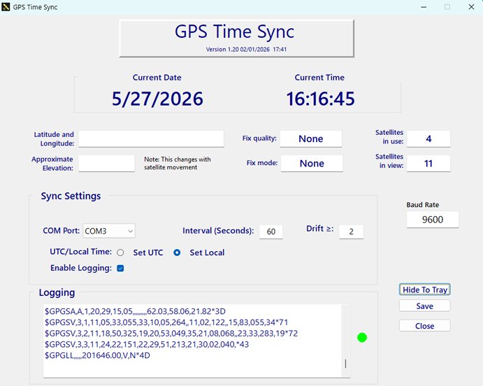

Connect a receiver
Plug in a VK-172 USB GPS dongle. The app looks for its hardware signature and selects the matching COM port when possible.
GPS-backed time for Windows
GPS Time Sync reads trusted NMEA time from a GPS receiver, watches for clock drift, and corrects Windows when your chosen threshold is reached.

Simple by design
Set it once, then let GPS Time Sync monitor the receiver and keep time in check.
Plug in a VK-172 USB GPS dongle. The app looks for its hardware signature and selects the matching COM port when possible.
Select UTC or local time, set the comparison interval, and choose how much clock drift is acceptable.
Valid GPS time is compared with Windows. When drift reaches the threshold, the system clock is corrected and the event is logged.
From orbit to Windows
GPS satellites broadcast precise time. GPS Time Sync reads that reference through your receiver and gives you clear control over how and when Windows is corrected.
Before you begin
Ready for reliable time?